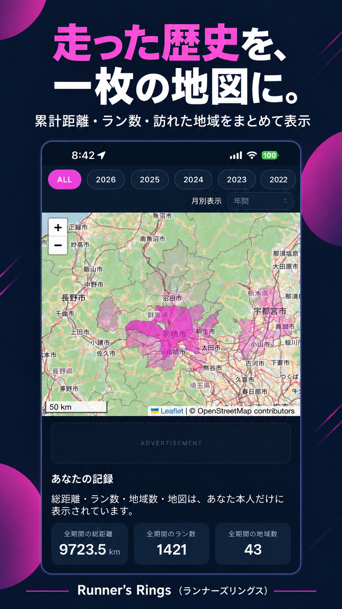
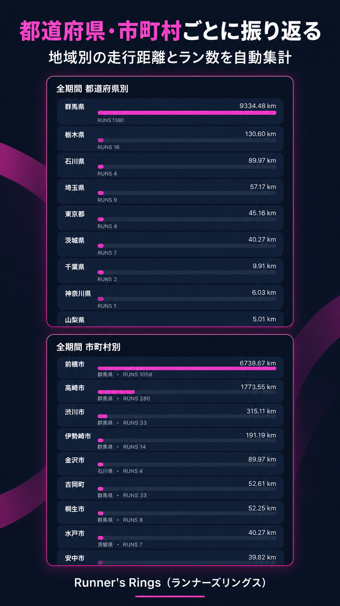
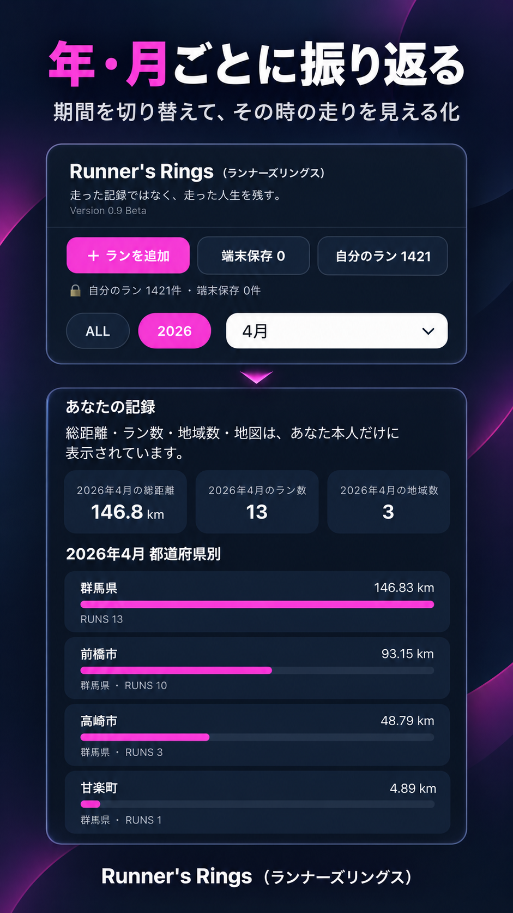
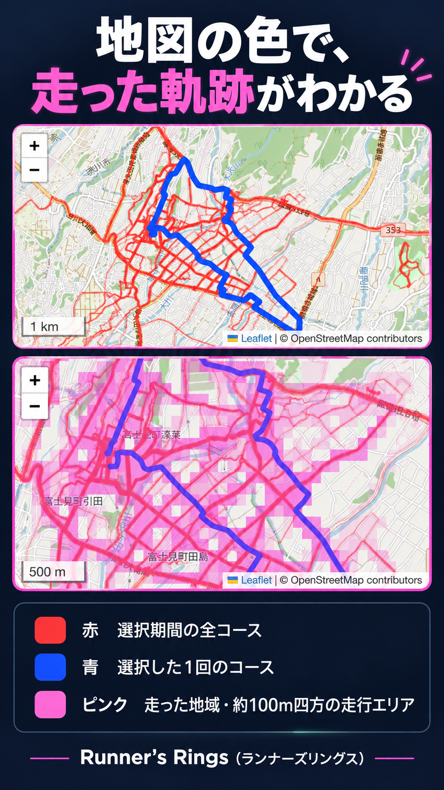

走った歴史を、一枚の地図に。
これまで走ったコースを地図に積み重ね、累計距離・ラン数・訪れた地域をまとめて表示します。
走った記録ではなく、走った人生を残す。
Runner's Ringsは、走った距離やタイムだけを記録するためのアプリではありません。
走った道を地図に積み重ねながら、 その時、その場所で走っていた自分の時間まで残していくためのアプリです。
Runner's Rings（ランナーズリングス）は、群馬を走る一人のランナーから生まれた個人開発のWebアプリです。
これまでのランニングを、地図と数字で自分だけの歴史として振り返れます。

これまで走ったコースを地図に積み重ね、累計距離・ラン数・訪れた地域をまとめて表示します。

走行距離とラン数を都道府県別・市町村別に自動集計します。どの地域を多く走ってきたのか、自分のランニングの歴史を地域ごとに振り返れます。

全期間・年・月を切り替えて、その時期に走った地図と記録を表示できます。過去の自分が、いつ、どこを、どれだけ走ったのかを確認できます。

Runner's Ringsは、トレーニングの評価だけではなく、 「どこまで走ったか」「次はどこを走ろうか」を地図から楽しめるように作っています。
日本では、国から都道府県、さらに市町村へと掘り下げて、 走破した地域数・走破率・残り地域数を確認できます。 走破済みと未走破の地域名も一覧で表示します。
ALLではこれまでの全期間、年を選べばその1年間だけの地図と走破状況を表示します。 積み重ねた人生の地図と、今年新しく広がった地図を分けて振り返れます。
地図は「自動・面・コース」を切り替えられます。 広い範囲では走った地域の広がりを「面」で、 道路レベルでは実際に走ったルートを「コース」で確認できます。
都道府県や国の走破状況は、対象地域だけを切り出した専用画像として共有できます。 走破済みの地域はピンクで表示し、走破数・走破率・残り数をシンプルにまとめます。
日本では国 → 都道府県 → 市町村、 海外では利用できる行政境界データに応じて国や州・地域を表示します。 世界中を同じ考え方で楽しめるよう、対応地域を段階的に広げています。
未走破の地域が見えることで、 「あと1つ隣の市まで行ってみよう」「今年はこの県を広げよう」と、 過去の記録が次のランニングのきっかけになります。
昔のランニングルートを見返すと、 距離やペースだけでは思い出せなかった出来事が、 不思議とよみがえることがあります。
「この頃は、子どもの部活の待ち時間によくここを走っていたな。」
「転勤する前、この街を走るのもあと少しだと思いながら走っていたな。」
「2023年は、こんな理由でこの辺りを何度も走っていたな。」
1回のランだけを見れば、それはひとつの運動記録かもしれません。
でも、何年も走り続け、その道が地図の上に積み重なっていくと、 そこにはその人の生活や時間、思い出まで残っていきます。
Runner's Ringsでは、Stravaなどに記録されたランニングデータを取り込み、 これまで走ってきたルートを1枚の地図に積み重ねていきます。
今日走った道も、数年前によく走った道も、 同じ地図の上に重なっていきます。
走るほど地図が育ち、 時間が経つほど、その地図に新しい意味が加わっていきます。
Runner's Ringsが残したいのは、 「何km走ったか」だけではありません。
どこを走り、どんな時間を過ごしてきたのか。
それを自分だけの地図として残し、 何年後でも振り返ることができる。